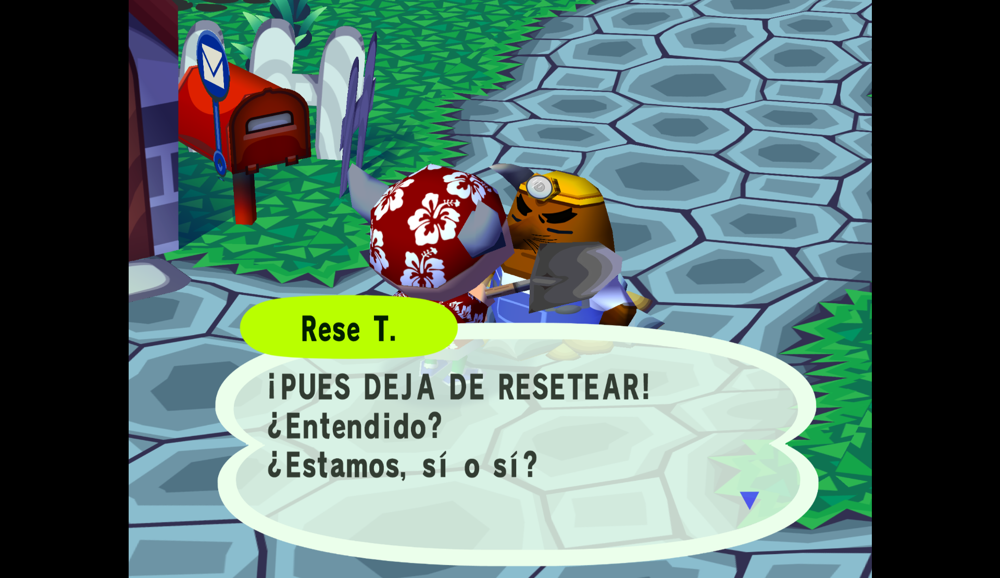

Cómo emular Animal Crossing (Gamecube) en PC
Diferentes versiones y gráficos remasterizadosAviso: Alessio2122 no se hace responsable de lo que pueda ocurrir a tu ordenador si ejecutas mal los pasos. Sigue la guía a tu propio riesgo. Recomendamos leer el texto varias veces antes de ponerse a ello.
Introducción
Seguro que si no vives debajo de una piedra conocerás de Animal Crossing, una saga de juegos que te permite vivir una segunda vida, al lado de animales y seres de lo más alucinantes. Decorando tu casa, llenando el museo o ganando la mayor cantidad de dinero posible.
Pues hoy te vengo a hablar sobre uno de los primeros juegos de esta saga de Nintendo, el Animal Crossing original de la consola Gamecube. Vamos a ver las distintas versiones de este juego y después pasaremos a emular este juego en tu propio ordenador.
Historia de los primeros juegos de Animal Crossing
Un ligero resumen, porque para ello, podría escribir otros artículos.
Doubutsu no Mori - 2001
Este fue el primer juego de Animal Crossing. Solo fue lanzado en Japón para la Nintendo 64 y según traducciones se llamaba "Animal Forest".
Doubutsu no Mori + - 2001
Este también fue lanzado solo para Japón, pero para la consola Gamecube, este incluía algunas funciones más que la anterior versión.
Animal Crossing - 2002/2003
Por fin se lanzó para Estados Unidos y Europa, incluía traducciones para los principales idiomas europeos, pero tenía casi las mismas cosas que Doubutsu no Mori +
Doubutsu no Mori e+ - 2003
La versión definitiva del juego, solo fue lanzada para Japón. Incluía muchas más funciones, eventos, items...
Doubutsu no Mori iQue - 2003
Sólo se lanzó en China para la consola Nintendo iQue. Es el mismo juego que se lanzó en Europa y Estados Unidos traducido al Chino.
Ahora que ya sabes la base de los juegos voy a explicarte cómo emularlos y te daré mis recomendaciones según tus preferencias.
Juego 1: Emular Doubutsu no Mori (Nintendo 64)
Si quieres probar la primera versión del juego, este es el juego que buscas.
Si recuerdas, el juego original estaba en japonés, así que, si no sabes el idioma, creo que no te enterarás de mucho (¿o no?).Sí, existen versiones creadas por fans que traducen el juego al inglés, y son alucinantes, así que voy a explicarlo para los dos juegos, el original en japonés y traducido al inglés.
Paso 1: Descargar un emulador de Nintendo 64
Por internet seguro que encuentras emuladores geniales, el que yo uso es Mupen64Next, dentro de RetroArch, que es como una librería gigante de emuladores.
Para descargar RetroArch ve a la página de descargas de RetroArch y descarga la versión que tu quieras para el sistema que tengas. Si has elegido la versión de instalación debes instalarlo, RetroArch tiene instrucciones para ello.
Genial, ahora que ya tienes instalado RetroArch, utiliza tu ratón para navegar por las páginas, ve a "Cargar un núcleo" y después a "Descargar un núcleo", finalmente busca un emulador de Nintendo 64, hay dos, el que a mí me gusta es el Mupen64Next. Seleccionalo y descargalo. Ya tienes tu emulador.
Paso 2: Descargar los juegos
Para evitarme problemas de legalidad, debes buscarlos tú. Según mis búsquedas si pones "Doubutsu no Mori English Rom" sale un enlace a Web Archive que incluye dos juegos, el japonés y el inglés.
Paso 3: Jugar
Ahora que ya tienes el emulador y los juegos, ve a RetroArch y a "Cargar contenido" entra en la carpeta en la que hayas metido los juegos y selecciona uno de ellos. Elige el núcleo y ¡a jugar! Deberás ir probando los controles, a la vez que empiezas a jugar.
Opinión
Creo que si me dijeran de jugar a este juego, no diría que no, pero hay opciones mejores, como las que vamos a ver más adelante.
Juegos 2, 3 y 4: Emular Doubutsu no Mori +, Animal Crossing y Doubutsu no Mori e+
Ahora sí, estos son los 3 juegos que vas a poder ver con texturas remasterizadas.
Paso 1: Descargar un emulador de Gamecube
Seguro que piensas descargar uno de RetroArch, pues siento decirte que el único que hay va como una tortuga, por ello, tendrás que descargar Dolphin. Se descarga e instala como cualquier otra aplicación. Ahora ábrelo y ve a "Mandos" y "Mandos de Gamecube", allí en el puerto 1 de Gamecube pon "Mando de juego estandar" y pulsa "Configurar". Ponle los botones teclas y mandos que quieras.
Paso 2: Descargar los juegos
Como ya dije antes, por cuestiones de legalidad, para Doubutsu no Mori + o Animal Crossing, como supongo que lo querrás en español, debes buscar algo como "Animal Crossing Gamecube Rom" y para Doubutsu no Mori e+ "Animal Forest e+ English Patch".
Paso 3: Abrir los juegos
En Dolphin ve a "Abrir" y ve a la carpeta en la que tengas los juegos, selecciona uno y a jugar. Pero espera, si va lento ve a "Gráficos" y en "General" pon el motor en Direct3D 11, después en "Mejoras" pon el suavizado de bordes en MSAAx2.
Paso EXTRA: Añadir gráficos remasterizados
Se ve un poco feo, ¿verdad?, para que se vea así:

Debemos descargar texturas personalizadas, pero tranquilo, que es fácil:
Paso 1: Descargar las texturas
Puedes descargarlas desde aquí: Dolphin Forums.
Paso 2: Meter las texturas en el juego
Tendrás que meterlas en una carpeta específica: C:\Users\TU USUARIO\AppData\Roaming\Dolphin Emulator\Load\Textures puedes copiar esta ruta (cambiando el usuario) en la aplicación "Ejecutar" de Windows, que se abre con las teclas Windows + R. Copia el interior del .zip en esta carpeta. Si vas a jugar Doubutsu no Mori e+ (English Patch) tendrás que hacer una copia de la carpeta llamada "GAF" y llamarla "GAEE01".
Paso 3: Jugar
Ahora, cada vez que juegues a Animal Crossing tendrás las rexturas remasterizadas.
Opinión
Estos tres juegos son de los mejores Animal Crossing de su época, además de que si les añadimos texturas y mods a los juegos pueden volverse más interesantes de lo que son ya.
Conclusión
Animal Crossing es una de las mejores sagas de juegos de Nintendo de la historia, y como tal, tiene muchas versiones e historia. Yo recomiendo jugar a los primeros juegos, solo para ver la evolución entre los demás, además de que siempre tiene alguna cosa distinta o novedosa que las otras entregas pueden no tener.
"Alessio2122, no has puesto Doubutsu no Mori iQue." Lo sé, no lo he puesto porque no he encontrado el emulador ni las roms. Además de que... ¡está en chino! y creo que si no sabes chino no te enterarás de una. Según lo que he investigado, tiene las mismas funciones y personajes que Doubutsu no Mori de la Nintendo 64. Y si aún quieres buscarlo, investiga y prueba, que así podrás hacer muchas cosas (pero ten cuidado con los virus, debes saber de dónde descargas las cosas).